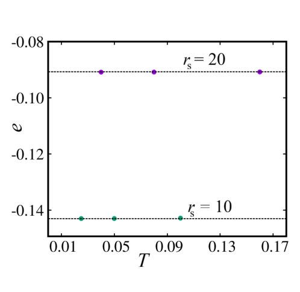

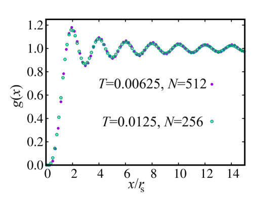
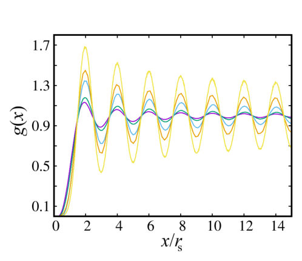
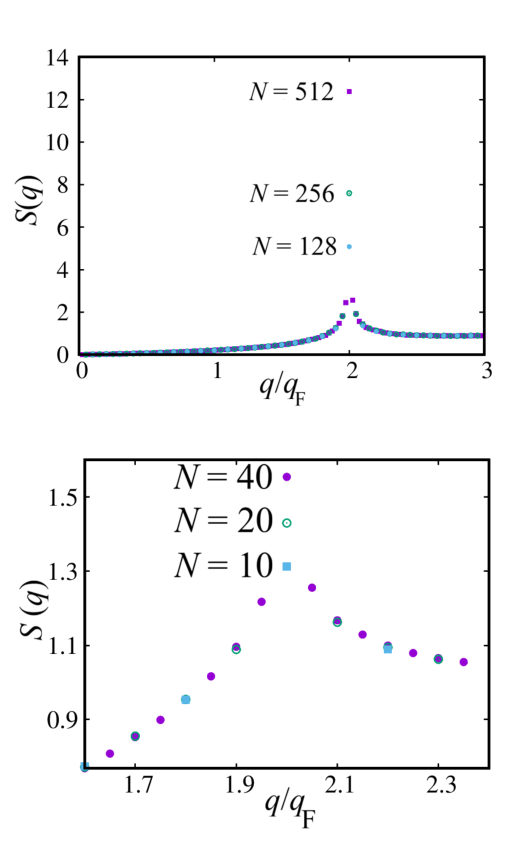
← Index · ← Previous · Next →
Authors: Yujia Tian, Devesh R. Kripalani, Ming Xue, Kun Zhou
Type: theory · Category: other · PDF: https://arxiv.org/pdf/2605.26817v1
Analysis basis: full PDF text, analyzed in chunks
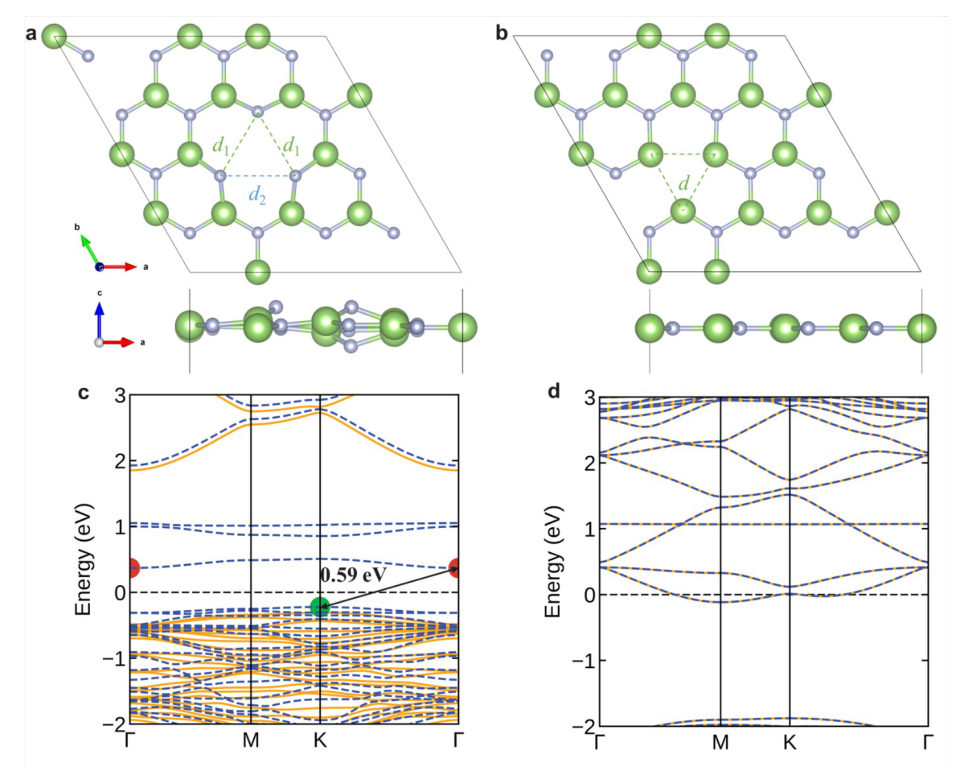
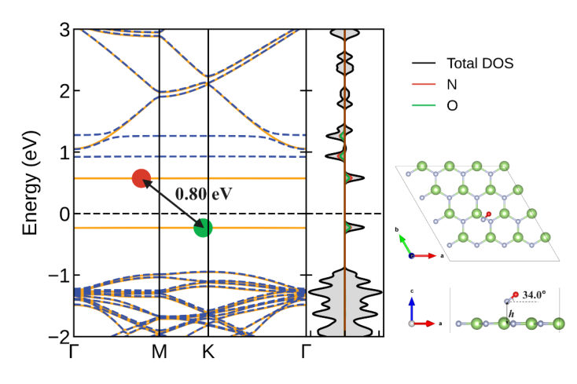
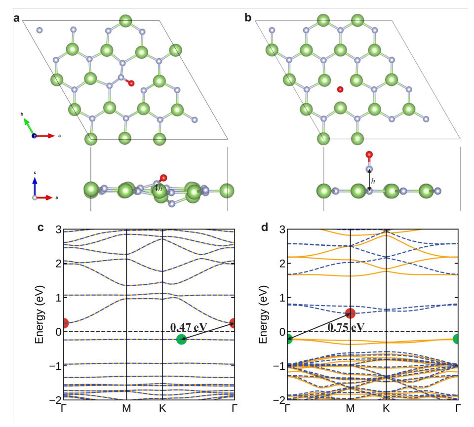
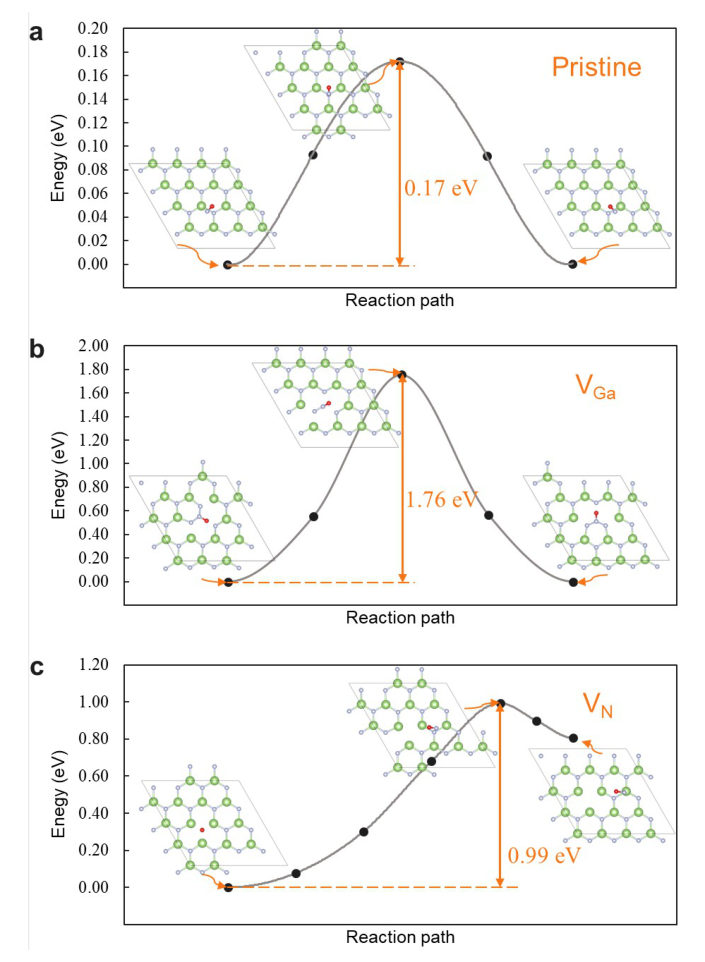
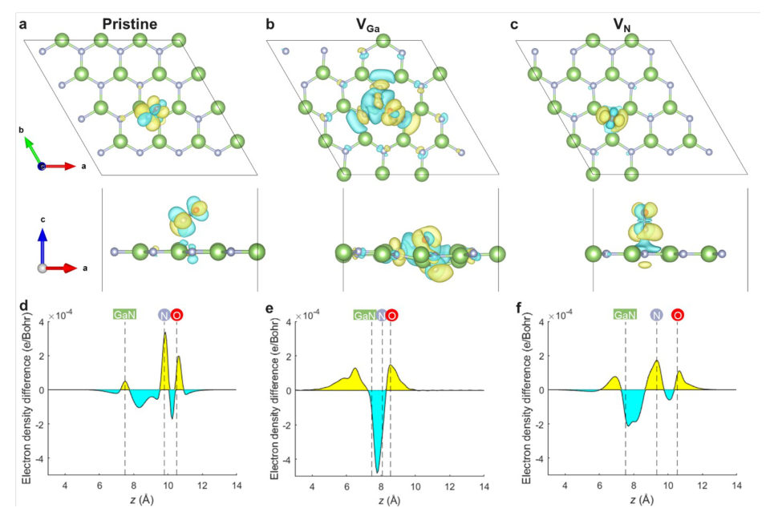
Summary. This paper explores how controlling vacancies and external electric fields in 2D gallium nitride can create tunable electronic, magnetic, and sensing functionalities. It identifies specific ways to use defects to create spin filters and gas sensors, providing a roadmap for advanced 2D semiconductor device engineering.
Why it may be interesting. not directly relevant
Main problem. Investigating how defect engineering (gallium and nitrogen vacancies), mechanical strain, and external electric fields can be used to tune the electronic, magnetic, and gas-sensing properties of 2D gallium nitride (g-GaN).
Main result. The study demonstrates that g-GaN can undergo a semiconductor-to-metal transition under high electric fields, that gallium vacancies can act as magnetic spin filters and thermodynamic traps for NO gas, and that the material is more resistant to electric-field-induced metallization than g-SiC.
Method. First-principles calculations using Density Functional Theory (DFT) with PBE and HSE06 functionals, including NEB for diffusion barriers and phonon calculations for stability.
Model / system. Two-dimensional/ultrathin gallium nitride (g-GaN) in a planar, graphene-like phase, including models for gallium vacancies (VGa), nitrogen vacancies (VN), and nitrogen monoxide (NO) adsorption.
Key observables. Band gap, magnetic moment, adsorption energy, charge transfer, conductivity, and semiconductor-to-metal transition threshold.
Important parameters / regimes. Electric field strength (up to 1.6 V/A), in-plane strain (tension/compression), and defect formation energies.
Assumptions / limitations. Calculations focus on the neutral case of the defect systems and exclude spin-orbit coupling due to its negligible effect on band splitting.
Figures summary. Figure 1 shows optimized defect geometries and spin-polarized band structures; Figure 2 shows NO adsorption and band gap reduction; Figure 3 shows NO adsorption on defective systems; Figure 4 shows energy barriers; Figure 7 shows the evolution of properties under electric fields.
Paper structure. The paper begins by establishing the structural and electronic properties of pristine g-GaN, moves to the impact of point vacancies (VGa, VN) on magnetism and electronic structure, explores the effects of strain and electric fields on metallization, and concludes with the application of these defects in gas sensing (NO adsorption) and a comparison with g-SiC.
Scaling wide-band-gap semiconductors to the ultrathin limit offers a transformative pathway for power electronics, with gallium nitride (GaN) representing a cornerstone material in this class. However, the operational resilience and functional tunability of its two-dimensional form (g-GaN) remain underexplored. This work shifts the focus from idealized systems to the complex materials behavior under realistic conditions, investigating how the synergistic effects of point vacancy defects, strain, and external electric fields govern its electronic, magnetic, and sensing landscapes. We demonstrate that these factors are not merely perturbations but are fundamental to modulating the material response. Our first-principles calculations suggest g-GaN maintains electronic stability under intense electric fields; notably, gallium vacancies are predicted to further extend the theoretical stability limit. While in-plane tension preserves the band gap evolution under an electric field, in-plane compression facilitates low-field metallization. Using nitrogen monoxide (NO) adsorption as a prototype, we find that the interaction is defect-modulated and potentially tunable by electric fields. Analysis of adsorption energetics and diffusion barriers suggests the gallium vacancy may act as a thermodynamic trap for NO. Targeted hybrid-functional (HSE06) validation confirms the reliability of observed adsorption trends and theoretical metallization thresholds, while revealing that precise electronic-exchange treatment is critical for capturing the magnetic ground state of nitrogen vacancies. By systematically examining the geometry, energetics, band structure, density of states, magnetic response, and charge transfer, this study clarifies the interplay between defects and external electric fields, providing insights into theoretical upper bounds for property tuning and semiconductor device engineering.
Authors: Nikita Guseynov, Nana Liu, Chi Seng Pun, Tushar Vaidya
Type: theory · Category: quantum information and computing · PDF: https://arxiv.org/pdf/2605.26610v1
Analysis basis: full PDF text, analyzed in chunks
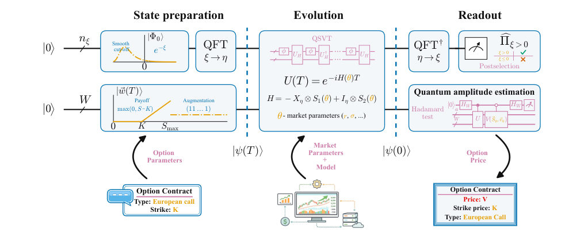
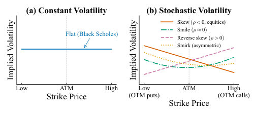
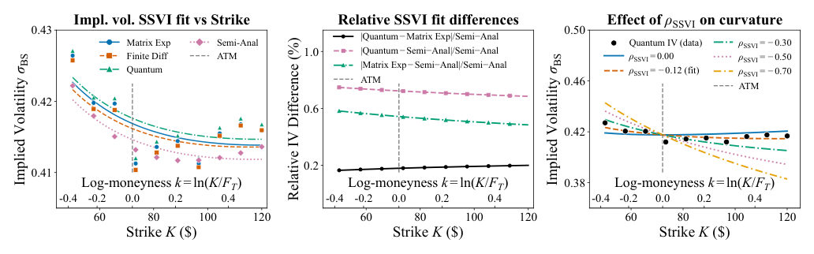
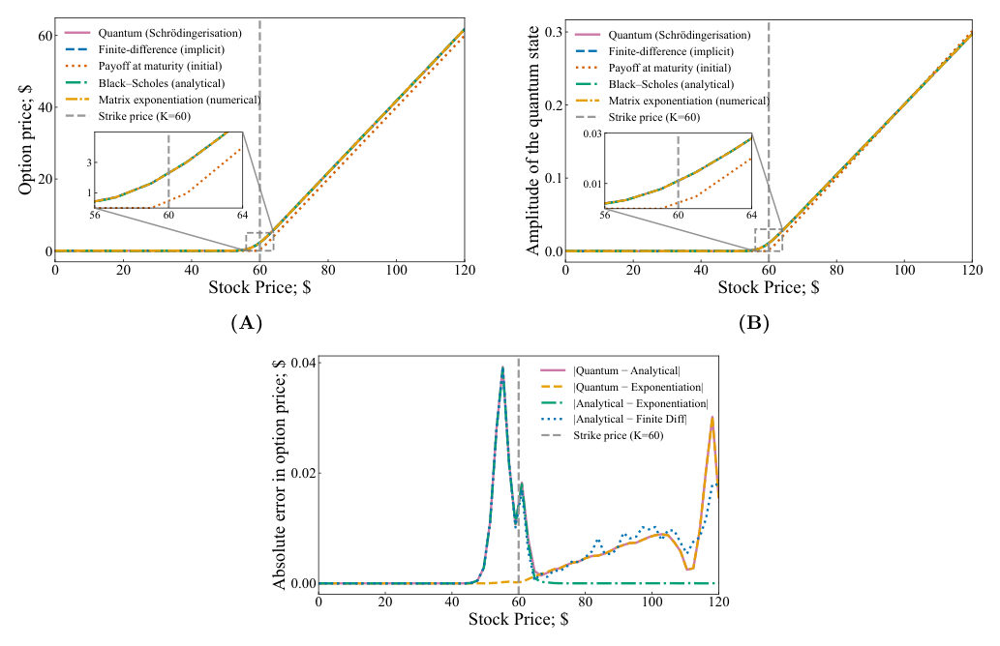
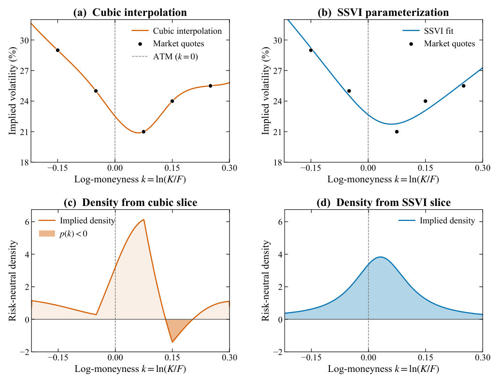
Summary. This paper proposes a complete quantum algorithm for pricing multi-asset options under complex volatility models. By mapping PDEs to a unitary Schrödinger-like evolution, it provides a theoretical polynomial speedup over classical grid-based methods for high-dimensional problems.
Why it may be interesting. not directly relevant
Main problem. Developing an end-to-end quantum computing framework for pricing multi-asset European options under complex local and stochastic volatility models, specifically addressing the readout bottleneck and the curse of dimensionality.
Main result. The authors present a quantum pipeline that achieves a polynomial improvement in grid size relative to classical finite-difference baselines, specifically an improvement factor of N^{d/2} for Black-Scholes and N^d for Heston models.
Method. The framework uses 'Schrödingerisation' to map non-unitary PDEs to unitary Hamiltonian evolution, implements the dynamics via Quantum Singular Value Transformation (QSVT) and block-encoding, and recovers option prices using Quantum Amplitude Estimation (QAE).
Model / system. The mathematical models are multi-asset Black-Scholes (local volatility) and Heston (stochastic volatility) models, formulated as high-dimensional parabolic partial differential equations (PDEs) discretized on spatial grids.
Key observables. European option prices, implied volatility smiles, and volatility skews.
Important parameters / regimes. Number of assets (d), grid resolution (N), discretization error, and gate complexity in terms of CNOT and Pauli-axis rotations.
Assumptions / limitations. The framework is limited to European-style options and relies on finite-difference discretization; it does not account for physical qubit overhead or error-correction costs.
Figures summary. Figure 1 shows the quantum pricing workflow; Figure 2 compares volatility profiles (flat vs. smile/skew); Figure 3 compares Heston implied volatility solvers; Figure 8 illustrates the smooth initialization function.
Paper structure. The paper introduces the financial problem, defines the mathematical PDE framework, details the quantum pipeline (state preparation, evolution, and readout), provides complexity analysis for different models, and concludes with numerical validation against classical benchmarks.
Multi-asset option pricing under local- and stochastic-volatility models leads naturally to high-dimensional parabolic PDEs. We develop an end-to-end quantum PDE framework for European option pricing under local-volatility Black--Scholes and Heston models. The framework takes classical contract and model data as input and returns classical estimates of selected option values. We solve the pricing PDEs after finite-difference discretization on spatial grids. For $N=2^n$ grid points per spatial direction and $d$ assets, the end-to-end gate complexity for single-point recovery, counted in elementary CNOT gates and one-qubit Pauli-axis rotations, has leading grid-size dependence $\widetilde{O}(d^2 N^{2+d/2})$ for local-volatility Black--Scholes and $\widetilde{O}(d^2 N^{d+2})$ for Heston. Relative to grid-based finite-difference baselines, these scalings correspond to polynomial improvement factors $N^{d/2}$ and $N^d$, respectively. These estimates translate to Clifford+T resources via standard compilation. We complement the complexity analysis with numerical benchmarks against standard classical methods. In the Heston setting, the framework recovers option prices across strikes together with the associated implied-volatility smile/skew. Overall, this work provides a complete end-to-end quantum pricing pipeline with explicit resource accounting and theoretical performance guarantees.
Authors: Massimo Boninsegni
Type: theory · Category: strongly correlated electrons · PDF: https://arxiv.org/pdf/2605.26420v1
Analysis basis: full PDF text, analyzed in chunks




Summary. This paper uses Quantum Monte Carlo simulations to study the ground state properties of a 1D electron gas. It demonstrates that long-range Coulomb interactions lead to quasi-crystalline order and shows how spin polarization affects the visibility of quantum statistics in the momentum distribution.
Why it may be interesting. The study provides deep insights into how long-range interactions and spin polarization influence many-body correlations and the emergence of quasi-crystalline order, which is fundamental to understanding 1D many-body dynamics.
Main problem. The study investigates structural and dynamic correlations in the ground state of a one-dimensional Fermi one-component plasma, specifically testing for deviations from Tomonaga-Luttinger Liquid Theory due to long-range Coulomb interactions.
Main result. The researchers found evidence of quasi-crystalline order emerging even in weakly correlated regimes and observed that quantum statistics significantly influence the momentum distribution in partially polarized systems, while being suppressed in unpolarized systems.
Method. Unbiased Quantum Monte Carlo simulations using the canonical variant of the continuous-space Worm Algorithm, with results extrapolated to the ground state limit.
Model / system. A one-dimensional assembly of N identical spin-1/2 charged particles in a box of length L with periodic boundary conditions, neutralized by a uniform background of opposite charge (jellium/OCP model) with repulsive Coulomb interactions.
Key observables. Pair correlation function, static structure factor, one-particle density matrix, momentum distribution, and energy per particle.
Important parameters / regimes. Dimensionless density parameter (rs) ranging from 1 to 20, system polarization (zeta) ranging from fully polarized to unpolarized, and the LT scaling property.
Assumptions / limitations. The 1D nature of the system allows for the avoidance of the sign problem; the study assumes the validity of the LT scaling for data collapsing despite potential long-range interaction deviations.
Figures summary. Figure 1 shows energy per particle vs temperature for different rs values; Figure 7 displays momentum distributions for majority and minority spin components in partially polarized systems.
Paper structure. The paper introduces the 1D OCP model and the scientific problem, describes the Worm Algorithm QMC methodology, presents validation against existing literature, details structural and one-body results across different density and polarization regimes, and concludes with a discussion on quantum statistics and TLL theory.
Structural and dynamic correlations in the ground state of the one-dimensional Fermi one-component plasma are studied by Quantum Monte Carlo simulations. Results are presented for the pair correlation function, static structure factor, the one-particle density matrix and the momentum distribution, for the cases of full, partial and no polarization. Evidence is reported of density correlations slowly decaying with distance, with the concurrent emergence of quasi-crystalline order even in the weakly correlated regime. Effects of quantum statistics in the momentum distribution are discussed.
Authors: Hongyi Liu
Type: theory · Category: strongly correlated electrons · PDF: https://arxiv.org/pdf/2605.26957v1
Analysis basis: full PDF text, analyzed in chunks
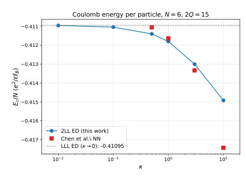
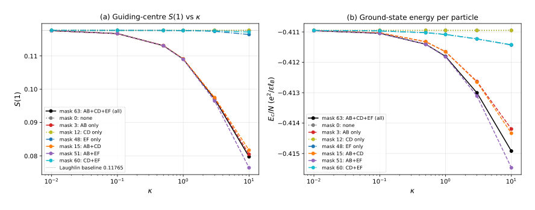
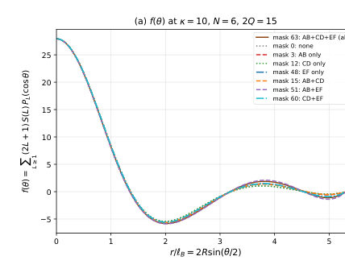
Summary. This paper demonstrates that Landau-level mixing in the nu=1/3 fractional quantum Hall state leads to a suppression, rather than an enhancement, of the long-wavelength structure factor. It identifies a non-perturbative inter-Landau-level pair-tunneling mechanism as the cause, contradicting traditional perturbative predictions. This finding highlights the importance of many-body coherent effects in Landau-level mixing physics.
Why it may be interesting. not directly relevant
Main problem. The paper investigates whether Landau-level mixing (LLM) at filling factor nu=1/3 causes a 'softening' (increase) or 'rigidification' (suppression) of the long-wavelength structure factor S(L), challenging the established GMP chain of reasoning.
Main result. The study finds that LLM actually causes a 32% suppression (rigidification) of the structure factor S(1), driven by a non-perturbative inter-Landau-level pair-tunneling channel (DD <-> UU) that overpowers perturbative effects.
Method. The authors use rigorous two-Landau-level (2LL) Exact Diagonalization (ED) on a Haldane sphere, supplemented by Schrieffer-Wolff perturbative dressing and channel-mask ablation to isolate specific scattering contributions.
Model / system. The system is the nu=1/3 Laughlin fractional quantum Hall state, modeled using a two-Landau-level Hamiltonian (LLL + SLL) with Coulomb interactions on a Haldane sphere geometry.
Key observables. Unprojected guiding-centre structure factor S(L) (specifically S(1)), magnetoroton gap Delta, and the real-space pair correlator g(theta).
Important parameters / regimes. The Landau-level mixing parameter kappa (ratio of Coulomb to cyclotron energy), particle number N=6, and magnetic monopole strength 2Q=15.
Assumptions / limitations. The study assumes a two-Landau-level truncation is sufficient to capture the essential physics of the rigidification mechanism.
Figures summary. Figures demonstrate the monotonic decrease of S(1) with kappa, the failure of the GMP product to remain invariant, and a four-way decomposition showing the dominance of the AB pair-tunneling channel.
Paper structure. The paper begins by introducing the GMP prediction discrepancy, presents the 2LL ED numerical results, performs a channel-mask ablation to identify the AB channel as the driver, provides a four-way decomposition to compare perturbative vs. non-perturbative effects, and concludes with a structural fingerprint analysis of the pair-tunneling process.
A textbook chain of reasoning, originating with Girvin, MacDonald, and Platzman, predicts that Landau-level mixing (LLM) at nu=1/3 should soften the long-wavelength structure factor S(L): virtual excitations suppress V_1, the magnetoroton gap closes, and the single-mode approximation then forces S(L) to increase. We test this chain on the Haldane sphere at nu=1/3, N=6, 2Q=15. (i) Perturbatively, via first-order Schrieffer-Wolff dressing of the LLL Laughlin state, fed Lowdin-renormalised pseudopotentials: the dressed state gives Delta S(1) at kappa=10 of approximately +21%, consistent with the GMP prediction (~19% softening of V_1^eff). (ii) Non-perturbatively, via rigorous two-Landau-level (LLL+SLL) exact diagonalisation using a repaired DiagHam 2LL module that retains, for the first time on the sphere, the full inter-LL scattering channels. The response reverses sign: S(1) rigidifies monotonically from 0.118 at kappa->0 to 0.080 at kappa=10, a 32% suppression. Perturbative and non-perturbative results thus disagree in sign, with a gap of ~53 percentage points between +21% (SW) and -32% (full ED). Channel-mask ablation localises the reversal to the DD<->UU pair-tunneling channel (98% of the shift). A four-way decomposition shows the three-body coherent content overpowers the perturbative admixture by ~2.5x. Repaired code: https://github.com/Cannan-1/DiagHamOnSphereOpenSource (v2.0).
Authors: R. David Mayrhofer, Andrey V. Chubukov
Type: theory · Category: strongly correlated electrons · PDF: https://arxiv.org/pdf/2605.26270v1
Analysis basis: full PDF text, analyzed in chunks
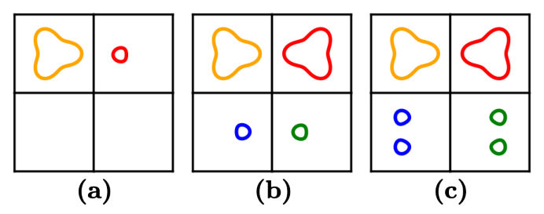
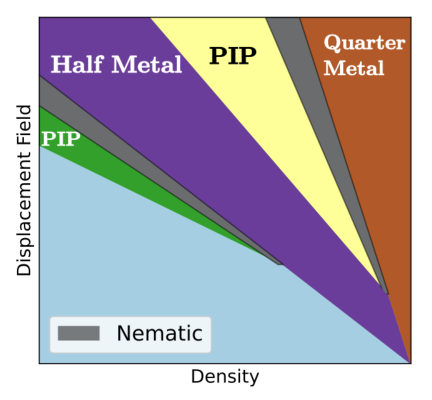
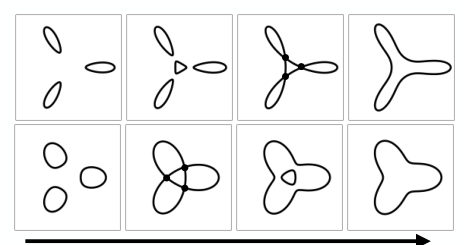
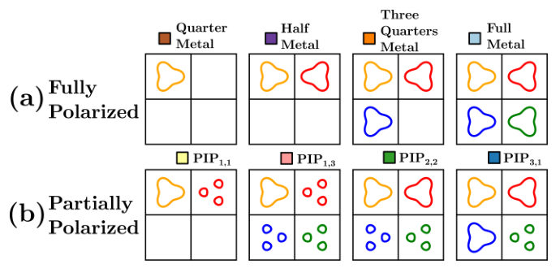
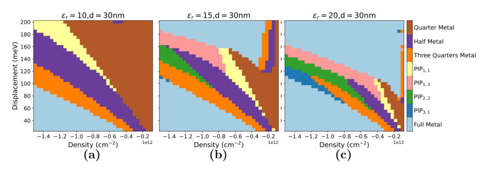
Summary. This paper provides a microscopic explanation for the spontaneous breaking of C3 symmetry in multilayer graphene. It demonstrates that nematic order arises in partially isospin polarized states when the screened interaction reaches a critical threshold. The findings help link the observed nematicity to the underlying electronic phase transitions in these systems.
Why it may be interesting. not directly relevant
Main problem. Investigating the emergence and origin of electronic nematic order (spontaneous breaking of C3 rotational symmetry) in multilayer graphene systems.
Main result. The study identifies that nematicity emerges in partially isospin polarized states near the boundaries of fully polarized phases, driven by the strength of the screened Coulomb interaction.
Method. A self-consistent Hartree-Fock framework is used for numerical phase diagrams, complemented by an analytical derivation of a nemostability criterion in the low-density limit.
Model / system. The study focuses on Bernal bilayer graphene (BBG) and rhombohedral trilayer graphene (RTG) using a tight-binding model that includes trigonal warping, a displacement field, and a dual-gate screened Coulomb interaction.
Key observables. Fermi surface topology (number of pockets), isospin polarization (spin and valley), and phase diagrams as a function of density and displacement field.
Important parameters / regimes. Carrier density, displacement field (D), dielectric constant (epsilon_r), gate distance (d), and trigonal warping (gamma_3).
Assumptions / limitations. The study focuses on q=0 orders, neglects spin-orbit coupling due to its small scale, and assumes the pocket size is small relative to the screening length for the analytical model.
Figures summary. Figure 1 shows a schematic of experimental phases; Figure 2 shows a theoretical phase diagram with nematic regions; Figure 3 illustrates Fermi surface evolution regimes; Figures 4-6 show phase diagrams and Fermi surface geometries; Figure 8 shows specific nematic regions in PIP states.
Paper structure. The paper begins with an introduction to experimental context, moves to a numerical study of phase diagrams using Hartree-Fock, provides an analytical derivation of the nematicity criterion, and concludes with a discussion of the results' implications for superconductivity.
Recent experiments on graphene multilayers under displacement field have demonstrated a wide variety of electronically ordered phases, including valley and/or spin polarized phases as well as potentially unconventional superconducting phases. In addition, quantum oscillation measurements in Bernal bilayer graphene and rhombohedral trilayer graphene showed the presence of electronic nematic states. Here, we investigate the emergence of nematic order in these systems, with emphasis on Bernal bilayer graphene, within a self-consistent Hartree--Fock framework, using a realistic band structure with trigonal warping and a dual-gate screened Coulomb interaction. We compute the phase diagram as carrier density and displacement field are varied, and find a sequence of isospin (spin and valley) polarized states consistent with experiment, including partially polarized phases with a large Fermi pockets for isospin-majority carriers and smaller Fermi pockets for isospin-minority carriers. Within these partially isospin polarized states, we identify regions with three $C_3$-symmetric pockets for the minority carriers and regions with only one or two such pockets, implying that the system develops a spontaneous nematic order that breaks $C_3$ symmetry. We find numerically that nematicity emerges near the boundary between fully and partially polarized phases and is controlled by the strength of the screened interaction. We analytically derive a criterion for the nematic order, which agrees with our numerical results.
Authors: Bei Qiao, Lei Wang
Type: theory · Category: numerical methods · PDF: https://arxiv.org/pdf/2605.26814v1
Analysis basis: full PDF text, analyzed in chunks
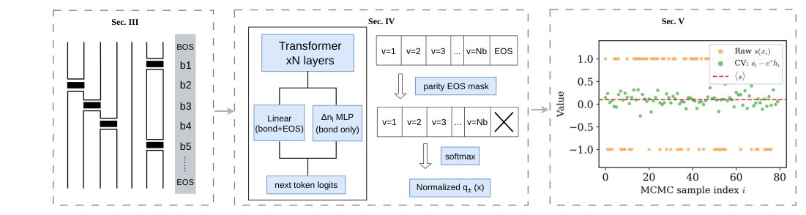
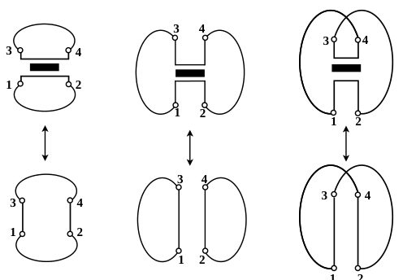
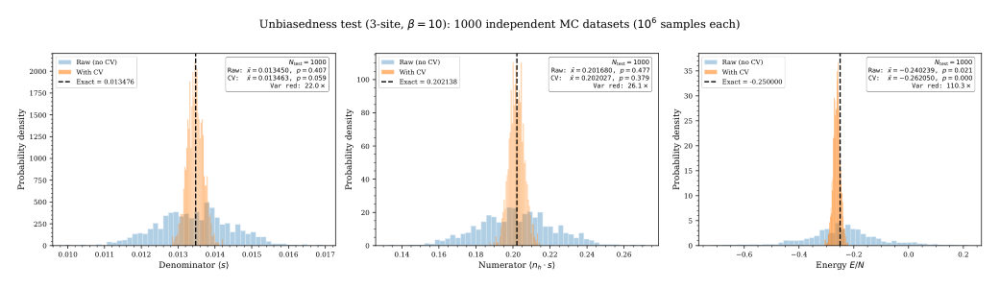
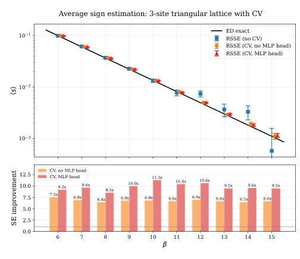
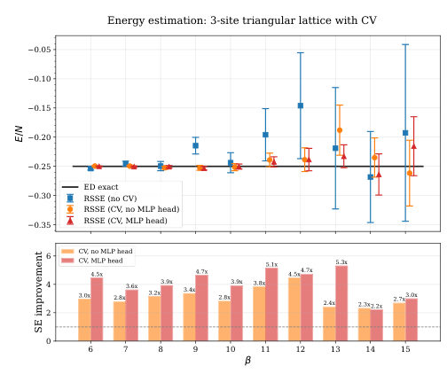
Summary. The authors present a machine learning approach to mitigate the sign problem in Quantum Monte Carlo simulations by using autoregressive neural networks as control variates. By training models to represent the positive and negative sign sectors separately, they create an unbiased auxiliary observable that significantly reduces estimator variance. This proof-of-principle demonstrates that neural networks can effectively stabilize simulations of frustrated quantum systems even in regimes of extreme sign cancellation.
Why it may be interesting. This work provides a novel way to use machine learning to tackle the sign problem, which is a fundamental bottleneck in the classical simulation of many-body quantum dynamics and frustrated magnetism.
Main problem. The exponential decay of the average sign in Quantum Monte Carlo (QMC) simulations of frustrated magnets, which leads to an unmanageable increase in estimator variance and signal-to-noise ratio.
Main result. The development of a neural autoregressive control variate method that reduces the standard error of the average sign by up to an order of magnitude and the energy estimator by a factor of 3 to 5, even when the average sign is below 10^-3.
Method. Training a pair of autoregressive Transformers, constrained to disjoint positive and negative sign sectors, to construct a structurally zero-mean control variate that reduces variance without changing the underlying sampling measure.
Model / system. The study focuses on frustrated quantum magnets, specifically the SU(2) Heisenberg antiferromagnet on triangular and tetrahedral lattices, using the Stochastic Series Expansion (SSE) framework.
Key observables. Average sign, energy estimator, operator count, and sign autocorrelation function.
Important parameters / regimes. Inverse temperature (beta), system size (N), and the average sign magnitude.
Assumptions / limitations. The method assumes the sampling measure is fixed by the Monte Carlo dynamics and does not replace the sampler; it also assumes the training signal is decoupled from the sign problem itself.
Figures summary. Figures illustrate topological reconnection mechanisms (split/merge/twist), probability density distributions of estimators, and comparisons of the control variate versus raw estimators across different temperatures and geometries.
Paper structure. The paper introduces the QMC sign problem, describes the neural autoregressive control variate architecture and its structural constraints, details the SSE framework extensions for frustrated lattices, presents numerical benchmarks on small triangular clusters, and discusses scaling limitations.
We train a pair of autoregressive models to construct zero-mean control variates to mitigate the sign problem in quantum Monte Carlo simulations. The two autoregressive networks are confined to the positive- and negative-sign sectors with strictly disjoint support, and each is exactly normalized over its sector. Their difference is therefore structurally zero-mean, providing an unbiased auxiliary observable whose correlation with the sign estimator controls the variance reduction. We implement the method within the stochastic series expansion framework, which we extend to frustrated lattices by developing an incremental loop-topology update. Sign-ergodic sampling is achieved through a twist channel, which is the unique sign-changing mechanism on non-bipartite lattices. We implement the control variates as autoregressive transformers with an end-of-sequence parity mask that enforces exact sign-sector resolution, while the incremental loop-count change and cumulative frustration parity are incorporated as topological features. On the triangular-lattice Heisenberg antiferromagnet, we benchmark the method in the small-$N$ limit. The control variate reduces the standard error of the average sign by up to an order of magnitude and that of the energy estimator by a factor of three to five, remaining effective even when the average sign drops below $10^{-3}$. This work lays out the framework and provides a proof-of-principle demonstration that autoregressive control variates can effectively mitigate the sign problem. Scaling to larger systems with physics-informed architectures is the subject of future work.
Authors: Juan Cruz-Benito, Ismael Faro
Type: theory · Category: quantum information and computing · PDF: https://arxiv.org/pdf/2605.27210v1
Analysis basis: full PDF text, analyzed in chunks
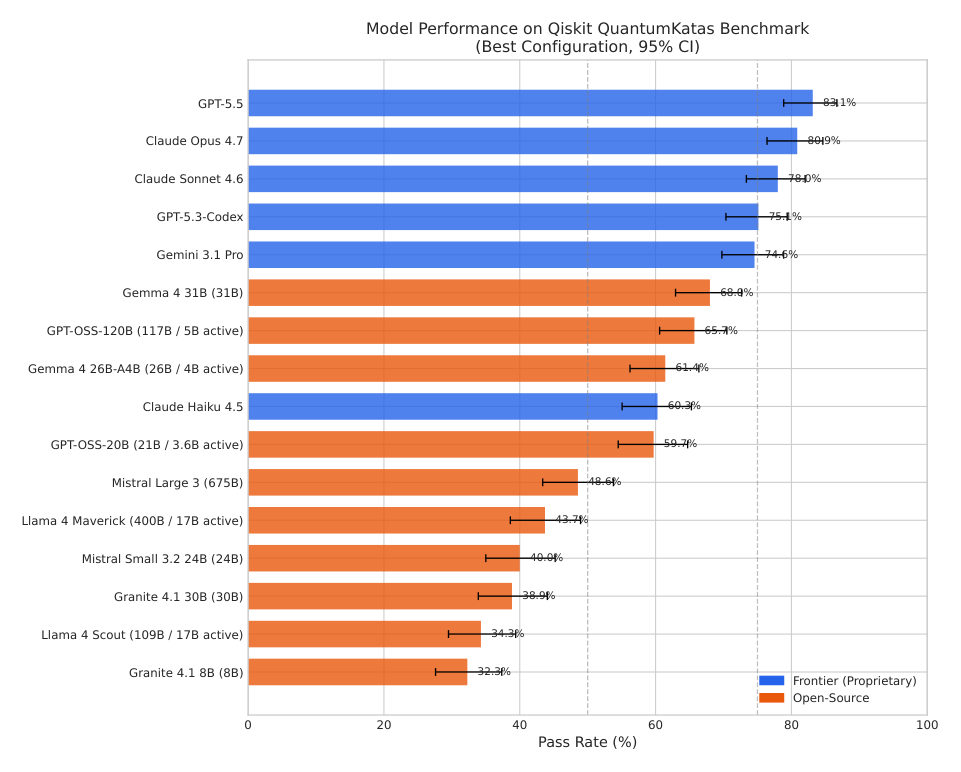
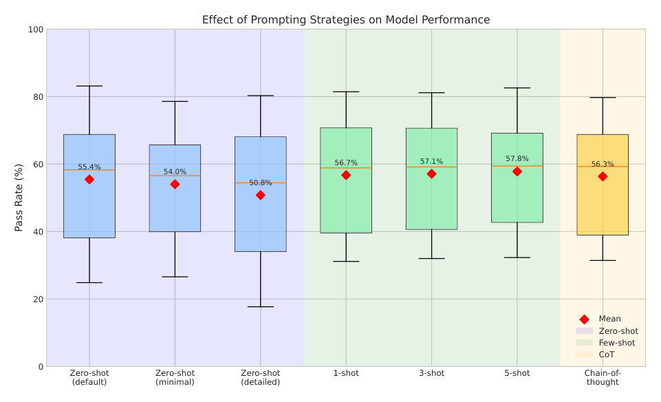

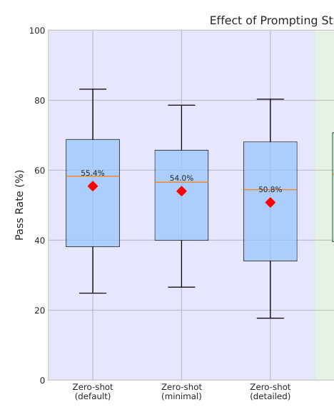
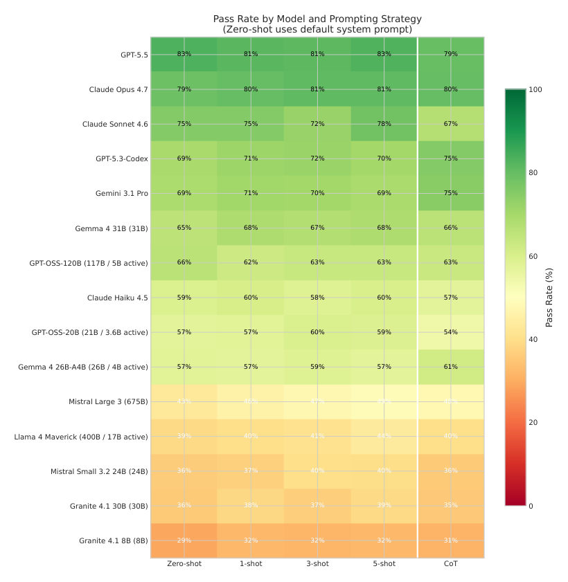
Summary. This paper introduces 'Qiskit QuantumKatas,' a new benchmark designed to evaluate how well LLMs can write quantum programming code. It reveals that while top-tier models can implement standard algorithms, they struggle with complex problem encoding and that advanced prompting techniques like Chain-of-Thought are not universally effective for quantum tasks.
Why it may be interesting. not directly relevant
Main problem. The lack of large-scale, pedagogically-structured benchmarks to evaluate the ability of Large Language Models (LLMs) to perform specialized scientific programming in the quantum computing domain.
Main result. The study identifies a 26.1 percentage point performance gap between frontier and open-source models, finding that while models excel at implementing known algorithms, they struggle significantly with problem encoding and that Chain-of-Thought prompting can actually degrade performance for many models.
Method. The authors adapted Microsoft's Q# QuantumKatas into the Qiskit framework, creating a 350-task benchmark across 26 categories, and evaluated 16 LLMs using seven different prompting configurations via classical circuit simulation.
Model / system. The study evaluates 16 Large Language Models, including frontier proprietary models (e.g., GPT-5.5, Claude Opus 4.7, Gemini 3.1 Pro) and open-source models (e.g., Llama 4, Gemma 4, Mistral).
Key observables. Model pass rates, error types (Logic, API, Circuit, Generation), and AST (Abstract Syntax Tree) similarity for solution diversity.
Important parameters / regimes. Prompting strategies (Zero-shot, Few-shot, Chain-of-Thought), pedagogical tiers (Introductory, Intermediate, Advanced), and model architecture (Frontier vs. Open-Source).
Assumptions / limitations. The evaluation relies on classical circuit simulation (statevector comparison), which does not account for real-world hardware noise or decoherence; results are reported at temperature 0.
Figures summary. Figure 1 shows pass rates distinguishing frontier and open-source models; Figure 2 uses box plots for prompting strategies; Figure 3 is a heatmap of per-model pass rates; Figure 4 visualizes task difficulty by category; Figure 5 shows the distribution of error types; Figure 6 shows performance decline across difficulty tiers.
Paper structure. The paper introduces the need for quantum programming benchmarks, describes the adaptation of QuantumKatas to Qiskit, details the experimental setup and prompting strategies, presents results on model performance and error analysis, and concludes with limitations and future directions.
We adapt Microsoft's QuantumKatas -- a well-established quantum computing curriculum -- from Q# to Qiskit, the most widely-adopted quantum computing framework, and package it with an evaluation framework for systematic LLM assessment. The resulting benchmark comprises 350 tasks across 26 categories, spanning fundamental gates through advanced algorithms (Grover's, Simon's, Deutsch-Jozsa), error correction, key distribution, and quantum games. Each task includes a natural language prompt, canonical solution, and deterministic test verification via classical circuit simulation. By building on the QuantumKatas' proven pedagogical design rather than creating tasks from scratch, we inherit a principled difficulty progression and comprehensive concept coverage while contributing the framework adaptation, evaluation infrastructure, and empirical analysis. We evaluate 16 LLMs across 7 prompting configurations -- a total of 39,200 model runs -- to demonstrate the benchmark's utility. Three key findings emerge: (1) the benchmark effectively differentiates model capabilities, with best-configuration pass rates ranging from 32.3% to 83.1% and a 26.1 pp average gap between frontier and open-source models; (2) models perform well at implementing known algorithms (SimonsAlgorithm 82.1%, BasicGates 81.6%) but struggle with problem encoding (SolveSATWithGrover 34.4%, DistinguishUnitaries 40.0%); and (3) chain-of-thought prompting shows a modestly bimodal effect -- it is the best strategy for three models (two of them explicitly reasoning-tuned per vendor documentation) but degrades performance for the rest, leaving it mid-pack in aggregate (56.3% mean) behind few-shot-5 (57.8%). We release the benchmark, evaluation framework, and baseline results to support research on LLM capabilities in quantum computing.
Authors: Danyu Shu, Ryotaro Sano, Ai Yamakage, Hiroshi Funaki, Mamoru Matsuo
Type: theory · Category: strongly correlated electrons · PDF: https://arxiv.org/pdf/2605.27059v1
Analysis basis: full PDF text, analyzed in chunks
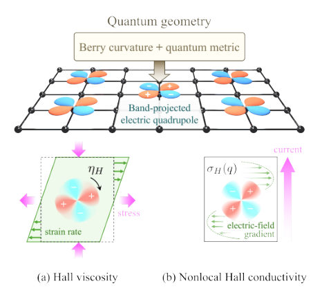
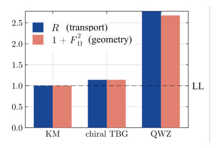
Summary. This paper connects the quantum geometry of lattice bands to measurable transport properties like Hall viscosity and nonlocal Hall conductivity. It demonstrates that the spatial extent of a wave packet (the electric quadrupole) links these two phenomena, providing a way to use electrical measurements to diagnose how closely a lattice system mimics the ideal physics of Landau levels.
Why it may be interesting. not directly relevant
Main problem. The paper seeks to identify measurable electrical observables that capture the quantum geometry (Berry curvature and quantum metric) in lattice bands to serve as a proxy for Hall viscosity.
Main result. The authors establish that Hall viscosity in lattice bands is governed by a band-projected electric quadrupole and propose that the nonlocal Hall conductivity serves as a transport diagnostic for the 'geometric idealness' of a band.
Method. The study uses a semiclassical wave packet approach, the Kubo formula for linear response, and a projected position operator framework to relate geometric tensors to transport coefficients.
Model / system. The study focuses on isolated, gapped Bloch bands, specifically examining Chern bands, moiré flat bands (chiral twisted bilayer graphene), the Kapit-Mueller model, and the Qi-Wu-Zhang model.
Key observables. Hall viscosity, nonlocal Hall conductivity, Berry curvature, quantum metric, and the nonlocal Hall ratio (R).
Important parameters / regimes. Adiabatic regime, Berry curvature fluctuations, and the trace condition (tr[g] = |Omega|).
Assumptions / limitations. The derivation assumes an adiabatic regime where interband mixing is negligible and focuses on isolated single energy bands.
Figures summary. Figure 1 provides a conceptual schematic of the electric quadrupole underlying Hall responses; Figure 2 compares the nonlocal Hall ratio R across different models (KM, chiral TBG, QWZ) against theoretical predictions.
Paper structure. The paper introduces the problem of lattice Hall viscosity, develops an algebraic framework using projected position operators, establishes the viscosity-conductivity relation, and validates the results using specific lattice models (KM, QWZ, and chiral TBG).
We show that Hall viscosity in lattice bands is governed by a band-projected electric quadrupole encoded within the quantum geometry: Berry curvature sets the projected-coordinate algebra, while the quantum metric determines the quadrupolar spread of a wave packet. The same structure enters the quadratic wave-vector coefficient of the nonlocal Hall conductivity, yielding a lattice viscosity-conductivity relation. In ideal bands, the deviation from the Landau-level form is quantified by Berry curvature fluctuations. Our results establish the nonlocal Hall response as an electrical signature of the quantum geometry underlying Hall viscosity and as a transport diagnostic of geometric idealness.
Authors: Silvia Bartolucci, Pierpaolo Vivo
Type: theory · Category: statistical mechanics · PDF: https://arxiv.org/pdf/2605.27202v1
Analysis basis: full PDF text, analyzed in chunks
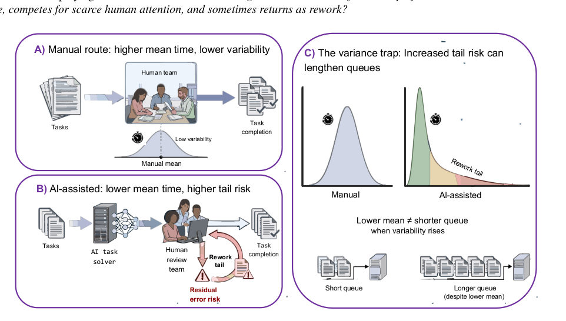
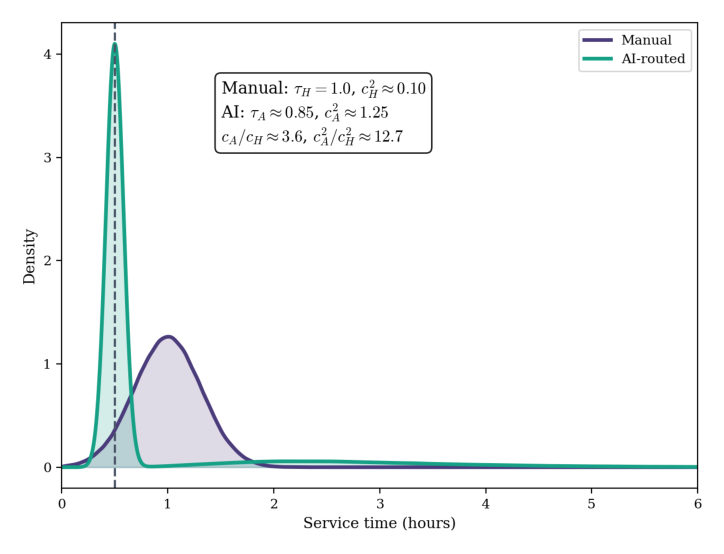

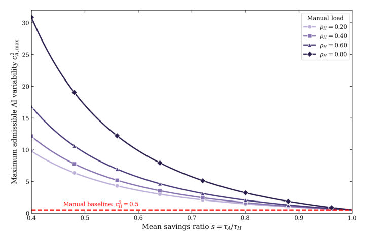
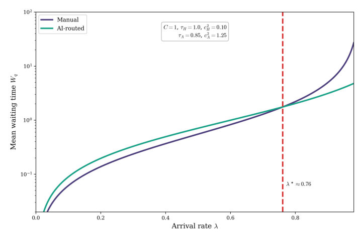
Summary. The paper demonstrates that using AI to speed up individual tasks can actually slow down entire workflows by introducing unpredictable rework and increasing queue congestion. It provides a mathematical framework to identify the 'variance budget' within which AI remains beneficial to system-level productivity.
Why it may be interesting. not directly relevant
Main problem. Investigating the 'variance wedge' phenomenon where AI adoption reduces average task processing time but increases system-wide waiting times due to increased service-time variability and rework.
Main result. AI deployment can paradoxically increase queue delays if the increased variability from errors outweighs the mean time savings; additionally, reviewers rationally reduce scrutiny as congestion increases.
Method. Application of M/G/1 and G/G/1 queueing theory, specifically using the Pollaczek-Khinchine and Kingman frameworks, alongside fixed-point analysis for endogenous congestion costs.
Model / system. An M/G/1 queueing model representing a workflow where tasks are routed between a manual route (low variance, high mean) and an AI-assisted route (high variance, low mean) with a feedback loop for rework.
Key observables. Mean waiting time (Wq), utilization rate (rho), squared coefficient of variation (cs2), and the equilibrium congestion cost (theta).
Important parameters / regimes. Arrival rate (lambda), AI-routing fraction (x), review effort (r), error probability (p), and the AI variance budget.
Assumptions / limitations. Poisson arrival process, fixed error process where review effort affects probability but not severity, and a single-layer human review process.
Figures summary. Figure 1 shows the workflow schematic and the 'variance trap' distribution shift; Figure 2 shows the spike-and-tail service distribution; Figure 3 plots the maximum admissible AI variability against savings; Figure 4 shows waiting time comparisons.
Paper structure. The paper introduces the productivity paradox, defines the queueing model and the variance wedge, derives analytical conditions for stability and efficiency, analyzes reviewer behavior under congestion, and concludes with diagnostic implications.
Quantifying the workplace productivity effects of Generative Artificial Intelligence is now central to economics, management, and public policy. The deployment of AI tools in customer service, writing, software development, and consulting operations has been reported to generate large per-task productivity gains, typically measured as tasks completed per worker-hour or reductions in mean handle time. We argue that such mean-based metrics can misrepresent AI's effects in workflows where tasks accumulate and compete for scarce human attention. AI assistance can generate a deceptive productivity signature: average completion times fall because AI tools typically supply a fast first draft, yet workflow-level performance deteriorates when a subset of AI errors escapes review and returns as costly downstream rework. We call this divergence between mean task speed and system-level delay the variance wedge. Depending on the operational parameters, the most time-efficient way to complete a workflow may undergo a transition between two task-processing regimes, a fully AI-assisted and a fully manual one. We formalize the mechanism as a queueing model and derive two main implications analytically. First, under congestion, reviewers rationally raise the risk threshold for checking AI outputs, reducing scrutiny precisely when it would matter the most. Second, AI assistance can stabilize an overloaded workflow only when (i) the fraction of tasks handled by AI exceeds a critical threshold, and (ii) the human attention required for review and expected rework is lower than the attention for manual completion, a requirement substantially more stringent than faster draft generation. These results suggest that AI deployment should be evaluated not only by average task speed, but by its overall effects on congestion, rework, and the robustness of human oversight under load.
Authors: Seong Yun Hong, Liang Z. Tan, Ki Hoon Lee, Youngho Kang, Yeonghun Lee
Type: theory · Category: quantum information and computing · PDF: https://arxiv.org/pdf/2605.26841v1
Analysis basis: full PDF text, analyzed in chunks
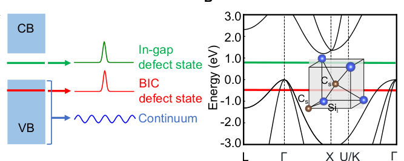
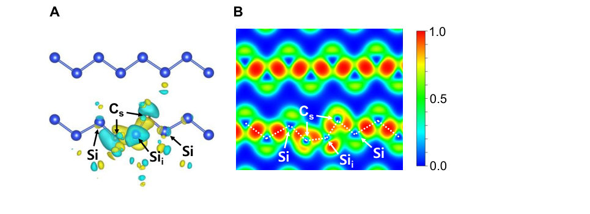
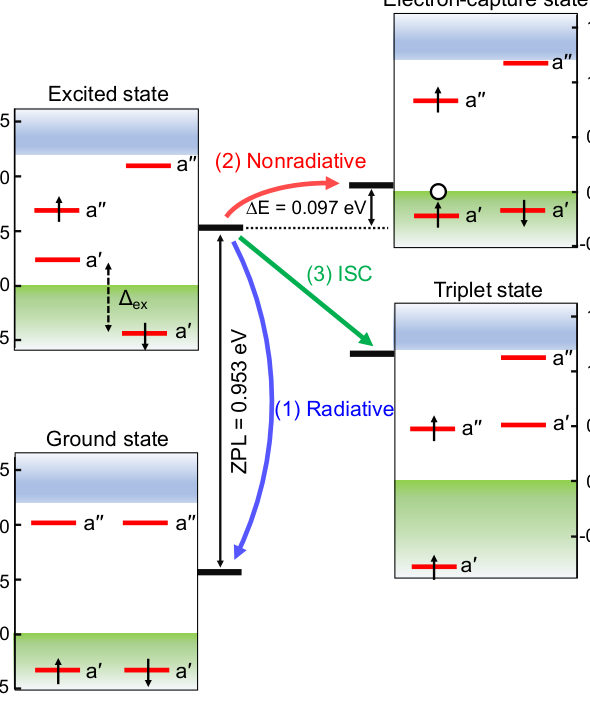
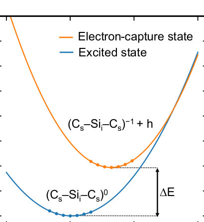
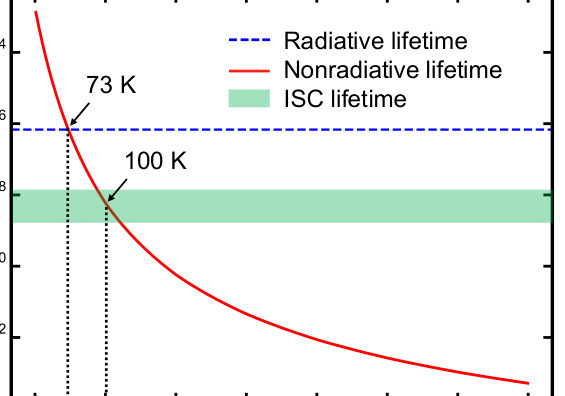
Summary. The paper demonstrates that the silicon G-center acts as an electronic bound state in the continuum due to exchange-driven energy-level reordering. This mechanism shifts the defect level above the valence band upon excitation, suppressing nonradiative decay and enabling stable photon emission. This discovery offers a general strategy for engineering defect-based optical systems for quantum technologies.
Why it may be interesting. It provides a new paradigm for designing stable quantum emitters and qubits by using exchange interactions to create electronic BICs, which is highly relevant for quantum optics and the development of solid-state quantum networks.
Main problem. Understanding how defect states embedded within the electronic continuum of a semiconductor can remain localized and optically active (radiative) instead of undergoing rapid nonradiative decay.
Main result. The authors identify an electronic Bound State in the Continuum (BIC) mechanism where exchange-driven energy-level reordering shifts a defect level from below the valence band maximum to above it upon excitation, suppressing nonradiative decay.
Method. First-principles density functional theory (DFT) using hybrid functionals (HSE06) with a Hubbard U correction, combined with the delta-SCF framework and configuration coordinate diagrams.
Model / system. The silicon G-center, a point defect in silicon consisting of two substitutional carbon atoms and one interstitial silicon atom (Cs-Si_i-Cs) with C1h symmetry.
Key observables. Zero-phonon line (ZPL) energy, radiative and nonradiative lifetimes, quantum efficiency, and charge transition levels.
Important parameters / regimes. Exchange splitting (delta_ex), temperature crossover points (73 K and 100 K), and the charge transition level epsilon(0/-) of 0.097 eV.
Assumptions / limitations. The excited state geometry is treated approximately using a single-determinant-based approach with corrections for open-shell singlets.
Figures summary. Figure 1 shows the electronic BIC schematic and band structure; Figure 2 visualizes defect wavefunctions and electron localization; Figure 3 illustrates energy-level reordering and decay pathways; Figure 5 compares temperature-dependent lifetimes.
Paper structure. The paper introduces the problem of continuum-embedded defects, presents the structural and electronic localization mechanism, details the exchange-driven energy reordering, calculates decay rates and temperature dependence, and concludes with implications for quantum emitters.
Continuum-buried defect states in semiconductors are generally expected to be optically inactive due to their strong coupling to continuum bands. Here, we show that such defects can instead host radiative electronic bound states in the continuum (BICs), using the silicon G-center as a prototypical example. Hybrid-functional first-principles calculations with a Hubbard $U$ correction reveal that a localized defect state, initially buried below the valence band maximum (VBM) in the ground state, undergoes exchange-driven energy-level reordering under optical excitation and shifts above the VBM. This exchange-induced transition suppresses nonradiative decay and enables robust radiative emission. By computing temperature-dependent nonradiative lifetimes and comparing them with experimental photoluminescence (PL) lifetimes, we quantitatively reproduce the observed temperature dependence of the emission. These results uncover a stabilization mechanism for continuum-embedded defect states and establish electronic BICs as a general paradigm for designing defect-based optical systems, including quantum emitters and qubits.
Authors: Zehui Zhao, Michael J Pasek, Ilya M Nemenman
Type: theory · Category: disordered systems and neural networks · PDF: https://arxiv.org/pdf/2605.26551v1
Analysis basis: full PDF text, analyzed in chunks
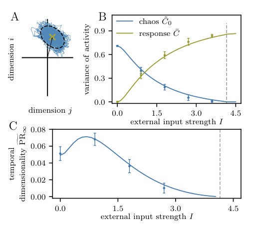
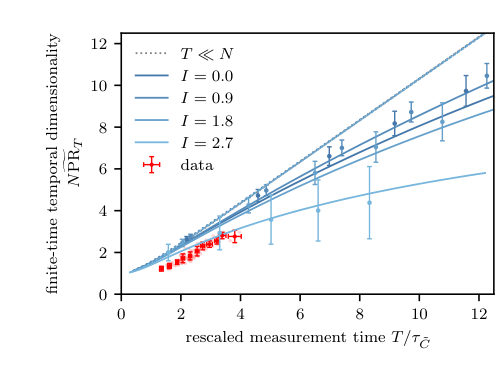
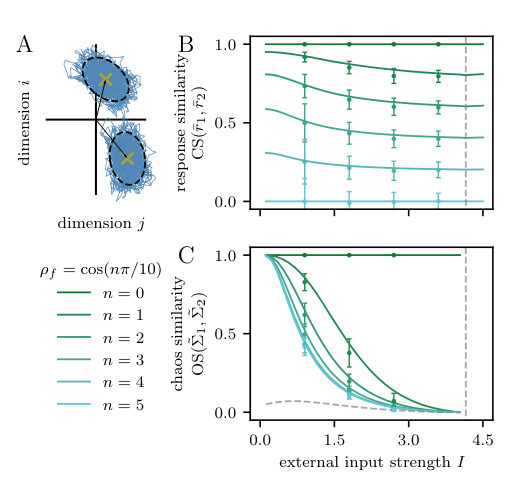
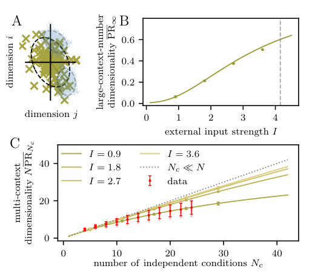
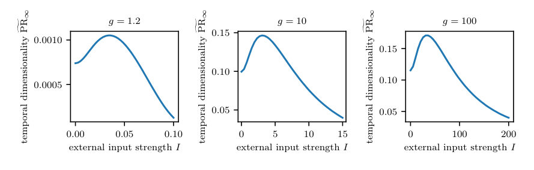
Summary. This paper demonstrates that the low-dimensional activity observed in biological neural populations can be explained by simple, randomly connected networks when accounting for finite measurement times and external inputs. It suggests that researchers should look beyond absolute dimensionality and instead use metrics like the orientation of activity fluctuations to identify true underlying network structures.
Why it may be interesting. not directly relevant
Main problem. Determining whether the observed low dimensionality in neural population activity is a result of specialized brain wiring or a generic property of randomly connected networks, and evaluating if current experimental measurements are sufficient to distinguish between them.
Main result. Random neural networks can match observed dimensionality in primate motor cortex, but current recording durations are too short to use dimensionality alone to distinguish connectivity structures; instead, measuring orientation similarity or non-monotonicity of fluctuations provides stronger tests.
Method. The authors use Dynamical Mean-Field Theory (DMFT) and a two-replica approach to semi-analytically calculate dimensionality and covariance statistics, supplemented by numerical simulations of large-scale networks.
Model / system. A population of N neurons with recurrent interactions described by a Sompolinsky-style random recurrent neural network model, where connectivity is sampled from a Gaussian distribution and neurons are driven by external behavioral contexts.
Key observables. Dimensionality (Participation Ratio), cosine similarity of ordered responses, orientation similarity of fluctuation ellipsoids, and population variances (ordered and chaotic components).
Important parameters / regimes. Gain parameter (g), external input strength (I), measurement time (T), autocorrelation time (tau_C), and neuron number (N).
Assumptions / limitations. Uses an adiabatic approximation for external inputs, assumes a specific error function nonlinearity, and assumes the large-network limit (N to infinity) for analytical derivations.
Figures summary. Figures show the dependence of finite-time dimensionality on measurement time, the non-monotonic relationship between input strength and dimensionality, and the stability of orientation similarity and cosine similarity across different regimes.
Paper structure. The paper introduces the problem of dimensionality in neural populations, presents a random network model using DMFT, analyzes the effects of finite measurement time and input strength, compares results to experimental primate data, and proposes new experimental diagnostics.
Randomly connected neural networks have long served as a theoretical tool for studying collective dynamics in neural populations, yet quantitative comparisons to experiments remain limited. Recent technological advances have made it possible to resolve population-wide correlations across neurons, and minimal models such as random neural networks predict their generic structure. Whether the two agree quantitatively remains untested. In this work, we examine whether a minimally structured random neural network can account for the low dimensionality of activity in neural population recordings by building on recent developments in Dynamical Mean-Field Theory and incorporating two additional experimentally relevant features into the model: finite measurement time and variability across behavioral contexts. We show that, when these factors are included, the dimensionality measured from large-scale recordings is consistent with the values predicted by random models. However, current recording durations make it difficult to use dimensionality to discriminate among connectivity structures. We further show that analytically predicted dimensionality varies non-monotonically with external input strength, and that the orientation similarity between neural manifolds recorded under different behavioral contexts can be more sensitive to network structure than dimensionality is. Together, these results provide quantitative guidance for experimental design to infer the connectivity structure underlying population activity.
Authors: G. V. Afonin, R. A. Konchakov, D. A. Chareev, S. A. Badmaeva, R. S. Khmyrov, A. N. Vasiliev, N. P. Kobelev, V. A. Khonik
Type: both · Category: disordered systems and neural networks · PDF: https://arxiv.org/pdf/2605.26767v1
Analysis basis: full PDF text, analyzed in chunks
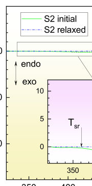
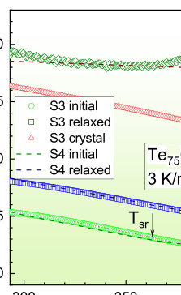
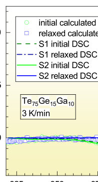
Summary. This paper proves that a specific mathematical relationship between thermal energy release and mechanical stiffness relaxation, previously thought to be specific to metallic glasses, also holds for covalent telluride glasses. This suggests a universal mechanism for structural relaxation in disordered solids driven by elastic dipoles.
Why it may be interesting. not directly relevant
Main problem. Investigating whether the theoretical framework relating heat effects to shear modulus relaxation, originally developed for metallic glasses, can be applied to non-metallic, covalently bonded telluride glasses.
Main result. The study demonstrates that heat effects (exothermic/endothermic reactions) are quantitatively linked to shear modulus relaxation via the Interstitialcy Theory, suggesting that relaxation in these covalent glasses is driven by elastic dipoles.
Method. Parallel measurements using Differential Scanning Calorimetry (DSC) for heat flow and Resonant Ultrasound Spectroscopy (RUS) for elastic moduli during temperature ramps.
Model / system. The physical system is a telluride glass (Te75Ge15Ga10) characterized by covalent bonding. The theoretical model uses the Interstitialcy Theory (IT) and the three-parameter Tool-Narayanaswami-Moynihan (TNM) model.
Key observables. Heat flow (delta W), shear modulus (G), glass transition temperature (Tg), crystallization temperature (Tcr), and temperature derivatives of moduli.
Important parameters / regimes. Shear susceptibility (beta), density (rho), structural relaxation onset (Tsr), and the presence of elastic dipoles.
Assumptions / limitations. The application of the Interstitialcy Theory (originally for metallic systems) assumes that relaxation phenomena in covalent glasses are governed by similar elastic dipole-like defects.
Figures summary. Figure 1 shows DSC thermograms for initial and relaxed states; Figure 2 shows the temperature dependence of the shear modulus G for different samples.
Paper structure. The paper introduces the problem of applying metallic glass theories to covalent glasses, describes the experimental setup (DSC and RUS) and sample preparation, presents the quantitative link between thermal and elastic data, and concludes with the implications for the nature of defects in glasses.
We performed parallel measurements of heat effects and shear modulus relaxation for glassy Te$_{75}$Ge$_{15}$Ga$_{10}$ taken as a representative of practically important non-metallic glasses with covalent bonding. It is shown that the heat effects occurring upon heating are quantitatively linked to the shear moduli in the glassy and crystalline states and their temperature derivatives as implied by Eq.(1), which was originally derived for metallic glasses. This relationship provides a good description of exo- and endothermal reactions using shear modulus relaxation data as an input. This is the first application of this approach to a non-metallic glass with directional interatomic bonding. The obtained results suggest that relaxation phenomena are governed by elastic dipoles -- atomic configurations with the symmetry lower than that of surrounding matrix.
Authors: Hyunmo Kang, Noam Itzhak Levi, Corinna Elena Wegner, Daniel J. Korchinski, Matthieu Wyart
Type: both · Category: disordered systems and neural networks · PDF: https://arxiv.org/pdf/2605.27006v1
Analysis basis: full PDF text, analyzed in chunks
Summary. This paper investigates how diffusion-based sampling explores complex data manifolds by studying 'U-turn' Markov chains. It discovers a phase transition between ergodic and non-ergodic regimes and shows that the hierarchical stability of features in neural networks undergoes a characteristic inversion as noise levels change.
Why it may be interesting. not directly relevant
Main problem. Understanding the ergodicity, relaxation dynamics, and hierarchical feature stability in diffusion-based sampling processes, specifically how data manifold fragmentation affects mixing.
Main result. The authors identify an ergodicity-breaking phase transition driven by manifold fragmentation and a 'layer-ordering inversion' where deep neural network representations switch from preserving more information to decorrelating faster than early layers as noise increases.
Method. The study uses a theoretical Random Hierarchy Model (RHM) combined with empirical tests on large-scale diffusion models for text (LLaDA) and images (ConvNeXt/ImageNet), employing U-turn Markov chains and correlation analysis.
Model / system. The primary theoretical framework is the Random Hierarchy Model (RHM), a tree-structured grammar, while the empirical systems are masked diffusion language models and convolutional neural networks.
Key observables. Layer-wise correlation C_l(n), relaxation time, ergodicity/mixing, rule density, and the layer-ordering inversion threshold.
Important parameters / regimes. U-turn magnitude (noise fraction rho), rule density (f), branching factor (s), and masking fraction.
Assumptions / limitations. The theoretical predictions assume an exact diffusion process and a simplified tree-like hierarchical structure in the RHM.
Figures summary. Figures illustrate the U-turn mechanism, the RHM tree structure, layer-wise correlation decay and inversion in both text and image models, and the stability of the phase diagram.
Paper structure. The paper introduces the U-turn chain concept, develops the RHM theoretical framework for phase transitions, presents empirical validation using LLMs and CNNs, and concludes with asymptotic analysis of the inversion threshold.
Sampling from learned high-dimensional distributions is a foundational computational problem. We introduce U-turn chains: Markov chains obtained by iterating short forward-backward steps of a diffusion model, in which each step proposes a move that remains on the learned data manifold and, paired with a Metropolis-Hastings correction, samples from energy-modified targets. For synthetic languages, we show that minimal U-turn dynamics undergoes an ergodicity-breaking phase transition driven by fragmentation of the data manifold; ergodicity is restored at larger U-turn magnitude. In the non-ergodic regime, low-level features relax faster than high-level ones, an ordering that inverts only at sufficiently large U-turn magnitude. We test these predictions on natural language and natural images. In both modalities, minimal U-turns relax slowly, especially for high-level features approximated by deep representations in CNNs or LLMs. The layer-ordering inversion appears only at large noise when mixing is efficient -- signatures consistent with strongly constrained, weakly mixing local dynamics. We discuss the implications of these results for sampling with diffusion models.
Authors: Ali Hussaini Umar, Alessandro Laio
Type: theory · Category: disordered systems and neural networks · PDF: https://arxiv.org/pdf/2605.26973v1
Analysis basis: full PDF text, analyzed in chunks
Summary. This paper identifies SNR and sample size as the primary controllers of how similar different neural networks become during training. It reveals that the similarity of internal features can be decoupled from how well the network performs its task, specifically showing a dip in alignment at the interpolation threshold.
Why it may be interesting. not directly relevant
Main problem. Understanding the fundamental drivers of representational alignment in neural networks and determining how data quality (SNR) and quantity (sample size) influence the similarity of learned internal representations.
Main result. The study finds that representational alignment increases monotonically with SNR but varies non-monultically with training sample size, reaching a minimum near the interpolation threshold. Crucially, it demonstrates that alignment and generalization performance are decoupled.
Method. The authors use an analytical approach with two-layer linear networks to derive closed-form expressions for alignment and introduce Conditional Copula Entropy (CCE) as a novel, rank-based information-theoretic metric.
Model / system. The primary model is a two-layer linear network (single hidden layer) trained via gradient flow on MSE, supplemented by nonlinear ReLU networks and real-world CNNs (CIFAR-10, MNIST) to test universality.
Key observables. Conditional Copula Entropy (CCE), generalization error, asymptotic correlation (rho), and Signal-to-Noise Ratio (SNR).
Important parameters / regimes. Signal-to-Noise Ratio (SNR), training sample size to dimension ratio (alpha), interpolation threshold (alpha=1), and the underparameterized vs. overparameterized regimes.
Assumptions / limitations. The analytical derivation assumes a high-dimensional limit (n, d -> infinity), small random initializations (rich learning regime), and that large distances in representations are not informative.
Figures summary. Figure 1 shows generalization error and CCE vs. alpha for different SNRs; Figure 2 shows ReLU network performance; Figure 3 compares Linear vs. ReLU informativeness; Figure 4 shows CNN performance on CIFAR-10 under label noise.
Paper structure. The paper introduces the problem of representational alignment, presents a new metric (CCE), provides analytical derivations for linear networks using spectral theory (Marchenko-Pastur), validates these with nonlinear and real-world experiments, and concludes by discussing the decoupling of alignment and generalization.
Neural networks are known to develop latent representations that are $aligned$, namely structurally similar across networks trained with different architectures, training protocols, or training datasets. We study this phenomenon in a controlled setting, where we train an ensemble of networks on regression and classification tasks using training sets perturbed by independent realizations of a noise process. We show that the signal-to-noise ratio (SNR) and the training sample size influence the alignment in qualitatively similar ways in networks trained on real-world datasets and in an extremely simple $linear$ network with a single hidden layer, for which the alignment can be estimated analytically. Across linear and nonlinear networks, regression and classification tasks, and both synthetic and real-world data, we consistently observe that alignment varies monotonically with SNR but non-monotonically with training sample size. In particular, the alignment is minimized near the interpolation threshold, and a stronger alignment does not necessarily correspond to better generalization error. These findings reveal a non-trivial dependence of alignment on data quality and quantity, decoupled from generalization performance.
Authors: Sarbajit Mazumdar, Jonas Issing, Jannis Seufert, David Riegler, Peter Wölfle, Ronny Thomale, Michael Klett
Type: theory · Category: strongly correlated electrons · PDF: https://arxiv.org/pdf/2605.26233v1
Analysis basis: full PDF text, analyzed in chunks
Summary. This paper presents a slave-boson framework to model superconductivity in the strong-coupling regime of the Hubbard model. It successfully captures the evolution of d-wave pairing and the dynamical features of the superconducting gap, providing a scalable method that bridges weak-coupling RPA and intensive numerical methods like DMFT.
Why it may be interesting. not directly relevant
Main problem. Developing a unified theoretical description of unconventional superconductivity that connects pairing symmetry, fluctuation spectra, and dynamical gap structure across broad ranges of interaction strength and doping.
Main result. The study demonstrates a systematic evolution of d-wave pairing symmetry and shows that spin fluctuations drive superconductivity, with the dynamical gap features qualitatively matching experimental cuprate observations.
Method. The authors use the spin-rotation-invariant Kotliar-Ruckenstein slave-boson approach combined with a Gaussian fluctuation expansion and a frequency-dependent Eliashberg-type gap equation.
Model / system. A single-band Hubbard model on a two-dimensional square lattice with nearest-neighbor (t) and next-nearest-neighbor (t') hopping, used as a proxy for cuprate physics.
Key observables. Spin and charge susceptibilities, superconducting gap amplitude, pairing symmetry (d-wave), critical temperature (Tc), and the real-frequency gap peak position (omega_peak).
Important parameters / regimes. Hubbard interaction strength (U), chemical potential (mu), doping/filling (n), temperature (T), and hopping parameter (t').
Assumptions / limitations. The analysis assumes a paramagnetic saddle point and focuses on Gaussian fluctuations; it currently lacks self-energy back-action and the inclusion of competing symmetry-broken orders.
Figures summary. Figures show the evolution of spin and charge susceptibilities, the n-U phase diagram for singlet superconductivity, and the frequency-dependent structure of the superconducting gap.
Paper structure. The paper moves from the microscopic slave-boson methodology and fluctuation derivation to the results regarding fluctuation profiles and phase diagrams, concluding with the analysis of superconducting properties and dynamical gap structure.
We study the emergence of superconductivity in the one-band Hubbard model using the spin-rotation-invariant Kotliar-Ruckenstein slave-boson (SB) approach. Motivated by its intrinsically renormalized mean-field ground state, we construct an effective pairing vertex from dynamical fluctuations about the saddle point. Solving the anisotropic, frequency-dependent gap equation on the square lattice, we map the pairing instabilities across doping, interaction, temperature and real-frequency gap structure that qualitatively match experimental cuprate observations. This framework merges strong-correlation SB-type renormalizations with RPA-type pairing transparency, providing a scalable route to modeling multi-orbital superconductivity at strong coupling.
Authors: Zhanyang Hao, Haohao Sheng, Wanru Ma, Wengen Zheng, Yongqing Cai, Zijuan Xie, Wanlin Cheng, Zuowei Liang, Wu Xie, Wenjuan Zhao, Chen Liu, Zhibin Su, Junhao Lin, Liusuo Wu, Zhengtai Liu, Mao Ye, Ji Dai, Massimo Tallarida, Shengtao Cui, Yogendra Kumar, Kenya Shimada, Kenichi Ozawa, Shuki Torii, Kazuhiro Mori, Yue Xie, Junze Deng, Jiaou Wang, Xuetao Zhu, Jiandong Guo, Jiawei Mei, Zhenyu Wang, Xianhui Chen, Ping Miao, Zhijun Wang, Chaoyu Chen
Type: both · Category: strongly correlated electrons · PDF: https://arxiv.org/pdf/2605.26426v1
Analysis basis: full PDF text, analyzed in chunks
Summary. The researchers identified a pure surface 5d-orbital order in the intermetallic compound Tb2CoAl4Ge2. This order is unique because it occurs at a temperature significantly higher than the bulk magnetic and structural transitions, providing a rare example of orbital order decoupled from lattice and spin degrees of freedom.
Why it may be interesting. not directly relevant
Main problem. The difficulty in identifying and distinguishing pure orbital order from concurrent structural or magnetic transitions in strongly correlated systems.
Main result. Discovery of a rare earth 5d-orbital order in the surface states of Tb2CoAl4Ge2 that is decoupled from bulk magnetic and structural transitions.
Method. A combination of ARPES, LD-ARPES, STM, and neutron powder diffraction, supported by DFT and mean-field Hamiltonian modeling.
Model / system. The intermetallic compound Tb2CoAl4Ge2, specifically focusing on the surface states originating from Tb 5d orbitals.
Key observables. Fermi surface deformation, band splitting, orbital polarization via linear dichroism, and nematic domain patterns.
Important parameters / regimes. Orbital ordering temperature (T ~ 51 K), magnetic transition temperatures (T_N1-T_N4), and the anisotropy energy (E_orb).
Assumptions / limitations. The use of a mean-field approximation to model the ferro-orbital order and the assumption that the observed symmetry breaking is driven by orbital physics rather than structural or magnetic distortions.
Figures summary. Figure 1 shows a phase diagram with multiple magnetic transitions; extended data figures illustrate magnetic structures, nematic domain patterns, and the insensitivity of the C2 state to magnetic fields.
Paper structure. The paper introduces the problem of orbital order, describes the material and experimental setup, presents the discovery of surface orbital order via ARPES, provides evidence for its decoupling from bulk transitions using neutron diffraction and STM, and concludes with a theoretical validation using a mean-field Hamiltonian.
Orbital order describes a quantum state where occupied orbitals line up in a periodic pattern. While orbital physics plays a fundamental and universal role in strongly correlated electron systems, the existence and particularly the band structure fingerprint of orbital order remain a long-standing mystery. Here, we report the discovery of rare earth 5d-orbital order developed by the surface states of intermetallic compound Tb2CoAl4Ge2. Angle-resolved photoemission spectroscopy reveals characteristic nematic features like Fermi surface deformation and band split. These experimental observations can be described by a ferro-orbital order term in the mean-field Hamiltonian. The structural and magnetic origin of such order is excluded by systematic high-resolution neutron powder diffraction and scanning tunnelling microscopy measurements. Our results provide strong evidence for a pure surface orbital order scenario avoiding complications from structural distortion as in colossal magnetoresistance manganites, magnetic order as in iron-based superconductors, and charge transfer p-orbital order in cuprates.
Authors: Arista Romadani, Apriadi Salim Adam, Ar Rohim, Bintoro Anang Subagyo, Agus Purwanto
Type: theory · Category: other · PDF: https://arxiv.org/pdf/2605.26743v1
Analysis basis: full PDF text, analyzed in chunks
Summary. This paper calculates how temperature affects the Casimir effect between two plates orbiting a wormhole. It demonstrates that while the vacuum energy depends on the spacetime, the thermal corrections in the local frame are independent of the wormhole's geometry. The results are shown to be thermodynamically consistent with the Nernst heat theorem.
Why it may be interesting. not directly relevant
Main problem. The study investigates the finite-temperature Casimir effect and its associated thermodynamic quantities for a massless scalar field in a Schwarzschild-like wormhole spacetime.
Main result. The thermal correction to the renormalized Casimir free energy is found to be independent of the background geometry in the comoving frame, and the derived thermodynamic quantities are consistent with the third law of thermodynamics.
Method. The authors use the Matsubara formalism, Schwinger proper-time method, and Riemann zeta function regularization to compute the renormalized energy and thermodynamic quantities.
Model / system. A massless scalar field is confined between two parallel plates in a circular orbit within a static, zero-tidal-force, Schwarzschild-like wormhole spacetime, subject to Dirichlet boundary conditions.
Key observables. Renormalized Casimir free energy, Casimir entropy, internal energy, and heat capacity at constant volume.
Important parameters / regimes. Temperature (T), plate separation (L), wormhole shape function parameter (gamma), and throat radius (r0).
Assumptions / limitations. The plates are in a comoving frame where the geometry is locally flat; the field is massless; and tidal effects inside the cavity are negligible.
Figures summary. Figure 1 shows the orbiting Casimir cavity; Figure 2 plots the thermal correction of the Casimir free energy versus temperature; Figure 3 shows the monotonic increase of entropy and internal energy and the peaked behavior of heat capacity.
Paper structure. The paper introduces the wormhole metric and the Casimir apparatus, describes the coordinate transformation to a comoving frame, applies regularization and renormalization techniques, analyzes the low and high-temperature limits, and discusses thermodynamic consistency.
We study the finite-temperature Casimir effect for a massless scalar field confined between two parallel plates in a Schwarzschild-like wormhole spacetime. Imposing Dirichlet boundary conditions, we compute the renormalized Casimir free energy in the comoving frame. We find that the thermal correction to the renormalized Casimir free energy decreases gradually with the temperature and becomes independent of the background geometry in this frame. Thermodynamic quantities derived from the Casimir free energy, namely, the renormalized Casimir entropy, internal energy, and heat capacity at constant volume, exhibit distinct temperature dependence. At low temperatures, all thermodynamic quantities recover the expected behavior, consistent with the fundamental laws of thermodynamics. These results provide a compact framework for analyzing quantum vacuum forces in gravitational backgrounds.
Authors: A. P. Zubarev
Type: theory · Category: disordered systems and neural networks · PDF: https://arxiv.org/pdf/2605.26570v1
Analysis basis: full PDF text, analyzed in chunks
Summary. This paper explores how the arrangement of nucleotides determines the hierarchical, ultrametric structure of RNA folding energy landscapes. It demonstrates that sequence order can drastically shift the degree of ultrametricity, suggesting that the landscape's complexity is a tunable feature of the sequence.
Why it may be interesting. not directly relevant
Main problem. Investigating the hierarchical (ultrametric) organization of the energy landscape in RNA secondary structures, specifically focusing on the ground-state configurations.
Main result. The degree of nontrivial ultrametricity varies widely in natural RNAs and is strongly dependent on nucleotide sequence order rather than just composition, with optimized sequences reaching extremes of 2.6% to 81%.
Method. Numerical study using the Nussinov algorithm for structure generation, a new direct ultrametricity criterion for triangle classification, and an adaptive random search algorithm for sequence optimization.
Model / system. The system consists of RNA secondary structures modeled by the Nussinov (maximum matching) model, where energy is determined by the number of base pairs, focusing on the $T=0$ degenerate ground-state manifold.
Key observables. Degree of nontrivial ultrametricity (u), fraction of trivial (equilateral) triangles, and the Higgs ultrametricity criterion (s/s_unc).
Important parameters / regimes. Nucleotide composition (fixed during optimization), nucleotide sequence order, and accuracy parameters (epsilon, delta) for ultrametricity classification.
Assumptions / limitations. The study assumes the Nussinov model's simplified combinatorial energy is sufficient to capture hierarchical properties and focuses on the $T=0$ limit without pseudoknots.
Figures summary. The notes do not provide specific descriptions of figures, though they mention Table 1 (natural RNA results) and Table 2 (synthetic sequence results).
Paper structure. The paper introduces the concept of ultrametricity in RNA landscapes, presents a numerical study of natural RNAs, describes a new metric and classification criterion, details an optimization algorithm for sequence permutations, and concludes with findings on sequence-dependent hierarchy.
We present a numerical study of the ultrametric properties of the set of RNA secondary structures with the maximum number of base pairs (energetically degenerate minima) within the maximum matching model (Nussinov algorithm). Using 18 natural small nuclear RNAs as examples, we show that the degree of nontrivial ultrametricity varies widely. We consider the optimization problem for the degree of nontrivial ultrametricity of RNA secondary structures with the maximum number of base pairs under a fixed nucleotide composition. It is found that permuting the nucleotide sequence can strongly change the degree of ultrametricity, indicating the key role of nucleotide order in shaping the hierarchical properties of RNA secondary structures.
Authors: Cecilie Glittum, Olav F. Syljuåsen
Type: theory · Category: statistical mechanics · PDF: https://arxiv.org/pdf/2605.26779v1
Analysis basis: full PDF text, analyzed in chunks

Summary. This paper resolves a long-standing debate by proving that the classical kagome spin liquid undergoes a weak first-order phase transition into an ordered phase. Using an advanced self-consistent theory, the authors demonstrate that the transition is a genuine thermodynamic event rather than a smooth crossover.
Why it may be interesting. not directly relevant
Main problem. Determining the low-temperature fate of the classical kagome Heisenberg antiferromagnet and resolving whether the transition from the spin liquid to the sqrt(3)xsqrt(3) phase is a thermal crossover or a thermodynamic phase transition.
Main result. The study shows that the spin liquid terminates at a weak first-order phase transition into the sqrt(3)xsqrt(3) phase, where the ordered moment saturates at zero temperature.
Method. The authors use Nematic Bond Theory (NBT), an extension of the Self-Consistent Gaussian Approximation (SCGA) based on a large-Ns expansion, to solve for the free energy and identify phase stability.
Model / system. A classical Heisenberg antiferromagnet on a kagome lattice with nearest-neighbor (J1) and potentially second-neighbor (J2) interactions.
Key observables. Free energy, ordered moment squared (m^2_AF), specific heat (cv), spin structure factor (S(q)), correlation length (xi), and latent heat (lh).
Important parameters / regimes. Temperature (T), second-neighbor coupling (J2), number of spin components (Ns), and system size (L).
Assumptions / limitations. The NBT method neglects vertex corrections in the diagrammatic treatment and may overestimate critical temperatures by 10-20%.
Figures summary. Figures include specific heat vs. temperature for different system sizes, a J2-T phase diagram showing first-order transition lines and a triple point, real-space spin correlations, and finite-size scaling plots for latent heat and critical temperature.
Paper structure. The paper introduces the problem of the kagome spin liquid fate, develops the NBT mathematical framework, presents the phase diagram and transition nature, compares results with Monte Carlo simulations, and discusses the extension to J2 interactions and the pyrochlore lattice.
The low-temperature fate of the spin-liquid regime in the classical kagome Heisenberg antiferromagnet has been debated for over three decades. Using an expansion in the number of spin components, we show that, contrary to earlier Monte Carlo simulations, the spin liquid terminates at a weak first-order phase transition into the $\sqrt{3}\times\sqrt{3}$ phase which ordered moment saturates at zero temperature. Adding second-neighbor interactions, this transition belongs to a line of first-order phase transitions that ends at a critical point. For comparison, the pyrochlore antiferromagnet remains disordered at all temperatures.
Papers from cond-mat.mtrl-sci, mes-hall, other, soft, supr-con. These archives are de-prioritized — they appear at the end regardless of relevance score.
Authors: Elsa Jöchl, Felix Helmrich, Frieder Lindel, Lucy Hale, Lorenzo Graziotto, Mona Jarrahi, Tobia F. Nova, Jérôme Faist, Giacomo Scalari
Type: experiment · Category: other · PDF: https://arxiv.org/pdf/2605.27319v1
Analysis basis: full PDF text, analyzed in chunks
Topic relevance: 🔥 Dicke superradiance 4/5 · 🔥 quantum optics experiment 4/5 · correlated cavity matter 3/5
Summary. This paper experimentally investigates the possibility of a superradiant phase transition in graphene-based Landau polaritons. By measuring the polariton dispersion in the ultrastrong coupling regime, the authors demonstrate that the system follows the Hopfield model and lacks the mode softening predicted by the Dicke model. This result effectively rules out a No-Go-evading phase transition in these graphene systems at current experimental scales.
Why it may be interesting. It addresses a fundamental debate in cavity QED regarding the existence of equilibrium phase transitions in light-matter systems and provides experimental evidence for the role of the diamagnetic term in the ultrastrong coupling regime.
Main problem. Investigating whether a superradiant phase transition (SRPT) can occur in graphene Landau polaritons, specifically testing if the system evades the 'No-Go' theorem that suppresses such transitions due to the diamagnetic A^2 term.
Main result. The experiment rules out a No-Go-evading SRPT in graphene Landau polaritons at accessible coupling strengths, finding that the system follows the Hopfield model rather than the Dicke model.
Method. THz time-domain spectroscopy was used on an encapsulated monolayer graphene flake coupled to a split-ring resonator, with carrier density tuned via electrostatic gating and magnetic fields applied to induce Landau levels.
Model / system. The system consists of an encapsulated monolayer graphene flake ultrastrongly coupled to a single complementary split-ring resonator (cSRR). The physics is analyzed by comparing the Dicke model (which predicts SRPT) against the Hopfield Hamiltonian (which includes the diamagnetic A^2 term).
Key observables. Upper and lower polariton branches, polariton splitting, cyclotron frequencies, and THz transmission spectra.
Important parameters / regimes. Normalized coupling strength (up to Omega_R/omega_cav approx 0.4), carrier density (n), magnetic field (B), and cyclotron mass (m*).
Assumptions / limitations. The study assumes the validity of the near-field model for the sub-wavelength cavity and is limited by the experimental ability to reach the predicted critical density for the phase transition.
Figures summary. Figure 1 compares Dicke vs. Hopfield model predictions; Figure 2 shows spectral maps of polariton evolution; Figure 4 shows the UP frequency blue-shift (confirming Hopfield) and the lack of LP mode softening (ruling out SRPT).
Paper structure. The paper introduces the SRPT debate and the No-Go theorem, describes the graphene-cSRR experimental platform, presents THz spectroscopic results showing polariton dispersion, compares these results to Dicke and Hopfield models, and concludes with the implications for vacuum-induced order.
The condensation of photons into a macroscopically populated ground state, a superradiant phase transition (SRPT), is one of the most striking predictions of cavity quantum electrodynamics (cQED), yet has resisted experimental realization in equilibrium for over fifty years. Whether such a transition can survive at all in light-matter coupled systems is still debated, with a widely established \textit{No-Go} theorem ruling it out across several models. Graphene cyclotron transitions ultrastrongly coupled to terahertz (THz) cavities have been at the heart of this debate. At leading order, the linear Dirac dispersion of electrons does not generate the diamagnetic $\vec{A}^2$ term that enforces the theorem, making graphene the cleanest candidate for a No-Go-evading phase transition. Here, we present the first THz spectroscopic measurements of an encapsulated monolayer graphene flake ultrastrongly coupled to a single complementary split-ring resonator. By tuning the carrier density we sweep the system from weak coupling into the ultrastrong regime, reaching a normalized coupling $Ω_\text{R}/ω_\text{cav} \approx 0.4$. This is well into the range where a second order SRPT would manifest by a softening of the lower polariton branch, which we do not observe. The full polariton dispersion is instead quantitatively reproduced by a Hopfield Hamiltonian derived from first principles using a near-field model that accounts for the sub-wavelength character of the cavity. Our results establish an experimental baseline for predictions of cavity-driven phase transitions in two-dimensional Dirac systems, and rule out a No-Go-evading SRPT in graphene Landau polaritons up to the strongest couplings accessible today, with direct implications for proposals invoking vacuum-induced order in solid-state cQED.
← Index · ← Previous · Next →